バナナの形態変化
1

普通のバナナ
黄色く熟した果肉と柔らかな皮が特徴の、世界中で親しまれている果物です。栄養価が高く、手軽に持ち運びやすいため、健康的なスナックとして広く愛されています。
2

房のバナナ
複数のバナナが房状に連なった形態のバナナです。収穫から販売までの過程で効率的に取り扱うことができ、大量のバナナを一度に提供できるのが特徴です。
3

タコさんバナナ
この特殊なバナナは、プライヤーたちにとっては楽しい要素として覚えられており、プレイヤー同士の競り合いに一役買っています。